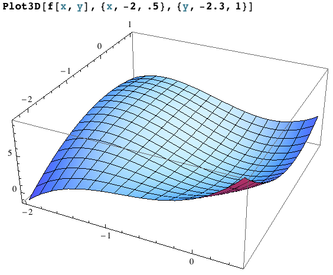
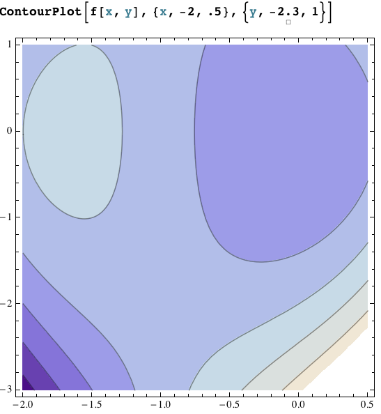

Section 14.7: Maximum and Minimum Values
MTH 310 — Calculus III | Partial Derivatives
Optimization: From Calc I to Calc III
In Calculus I you learned a systematic optimization procedure. Let's see what changes in Calculus III.
| Calculus I (\(y = f(x)\)) | Calculus III (\(z = f(x,y)\)) | |
|---|---|---|
| Critical points | \(f'(x) = 0\) or DNE | \(f_x = 0\) and \(f_y = 0\) (or DNE) |
| Classify | 2nd Derivative Test | 2nd Derivative Test (with \(D\)) |
| New phenomenon | — | Saddle points! |
| Absolute extrema | Check critical pts + endpoints | Check critical pts + boundary |
Local Extrema and Critical Points
Can a differentiable function \(f\) have a local maximum at \((a,b)\) with \(f_x(a,b) = 3\)?
Can \(f_x(a,b) = 0\) and \(f_y(a,b) = 0\) without \(f\) having a local max or min at \((a,b)\)?
Definition 1: Local Maximum and Minimum
A function \(f(x,y)\) has a local maximum at \((a,b)\) if \(f(x,y) \leq f(a,b)\) for all \((x,y)\) near \((a,b)\).
A local minimum at \((a,b)\) means \(f(x,y) \geq f(a,b)\) for all \((x,y)\) near \((a,b)\).
Definition 2: Theorem: Necessary Condition for Extrema
If \(f\) has a local extremum at \((a,b)\) and the first-order partial derivatives exist there, then
\[f_x(a,b) = 0 \quad \text{and} \quad f_y(a,b) = 0\]
Just like Calc I: if a tangent plane exists at a local extremum, it must be horizontal.
Finding Critical Points
Definition 3: Critical Point
A point \((a,b)\) is a critical point of \(f\) if:
- \(f_x(a,b) = 0\) and \(f_y(a,b) = 0\), or
- one (or both) partial derivatives do not exist there
Procedure for finding critical points:
- Compute \(f_x\) and \(f_y\)
- Set \(f_x = 0\) and \(f_y = 0\) simultaneously
- Solve the system of equations for \(x\) and \(y\)
Example: Find the Critical Points
Example 1
Find the critical points of \(f(x,y) = 2x^3 + xy^2 + 5x^2 + y^2\).
Solution
Step 1: Compute partial derivatives.
\[f_x = 6x^2 + y^2 + 10x, \qquad f_y = 2xy + 2y\]
Step 2: Set \(f_y = 0\): \(\;2y(x + 1) = 0\), so \(y = 0\) or \(x = -1\).
Case 1: \(y = 0\) ⇒ \(f_x = 6x^2 + 10x = 2x(3x + 5) = 0\) ⇒ \(x = 0\) or \(x = -\tfrac{5}{3}\)
Case 2: \(x = -1\) ⇒ \(f_x = 6 + y^2 - 10 = y^2 - 4 = 0\) ⇒ \(y = \pm 2\)
Critical points: \((0, 0)\), \(\left(-\tfrac{5}{3}, 0\right)\), \((-1, 2)\), \((-1, -2)\)
The Second Derivative Test
Now that we can find critical points, how do we classify them?
Definition 4: Second Derivative Test
Suppose the second partial derivatives of \(f\) are continuous near \((a,b)\) and \(f_x(a,b) = f_y(a,b) = 0\). Define:
\[D = D(a,b) = f_{xx}(a,b) \cdot f_{yy}(a,b) - \left[f_{xy}(a,b)\right]^2\]
| Condition | Conclusion |
|---|---|
| \(D > 0\) and \(f_{xx} > 0\) | Local minimum |
| \(D > 0\) and \(f_{xx} < 0\) | Local maximum |
| \(D < 0\) | Saddle point |
| \(D = 0\) | Inconclusive (test fails) |
Saddle Points: The New Phenomenon
A saddle point has no analog in single-variable calculus. At a saddle point:
- \(f_x = 0\) and \(f_y = 0\) (the tangent plane is horizontal)
- The surface curves up in one direction and down in another
- The point is neither a local max nor a local min
Think of a mountain pass (or the shape of a Pringles chip): it's the highest point on the trail going one direction, but the lowest point going the other direction.
Caution: When \(D = 0\)
Example 2
Show that \(D = 0\) at the origin for \(f(x,y) = x^4 + y^4\). Is \((0,0)\) actually an extremum?
Solution
\(f_x = 4x^3\), \(f_y = 4y^3\) ⇒ \((0,0)\) is a critical point.
\(f_{xx} = 12x^2\), \(f_{yy} = 12y^2\), \(f_{xy} = 0\)
At \((0,0)\): \(D = (0)(0) - 0^2 = 0\) — test is inconclusive.
But \(f(x,y) = x^4 + y^4 \geq 0 = f(0,0)\) for all \((x,y)\), so \((0,0)\) is clearly an absolute minimum.
Example: Classify the Critical Points
Example 3
Classify all critical points of \(f(x,y) = 2x^3 + xy^2 + 5x^2 + y^2\).
(We already found them: \((0,0)\), \((-\tfrac{5}{3}, 0)\), \((-1, 2)\), \((-1, -2)\).)
Solution
Second partials: \(f_{xx} = 12x + 10\), \(\;f_{yy} = 2x + 2\), \(\;f_{xy} = 2y\)
At \((0,0)\): \(D = (10)(2) - 0 = 20 > 0\), \(f_{xx} = 10 > 0\) ⇒ local min
At \((-\tfrac{5}{3}, 0)\): \(D = (-10)(-\tfrac{4}{3}) - 0 = \tfrac{40}{3} > 0\), \(f_{xx} = -10 < 0\) ⇒ local max
At \((-1, 2)\): \(D = (-2)(0) - 16 = -16 < 0\) ⇒ saddle point
At \((-1, -2)\): \(D = (-2)(0) - 16 = -16 < 0\) ⇒ saddle point


Your Turn: Find and Classify Critical Points
Example 4
Find and classify the critical points of \(f(x,y) = x^2 + y^2 - 2x - 6y + 14\).
Solution
\(f_x = 2x - 2 = 0\) ⇒ \(x = 1\)
\(f_y = 2y - 6 = 0\) ⇒ \(y = 3\)
Only critical point: \((1, 3)\).
\(f_{xx} = 2\), \(f_{yy} = 2\), \(f_{xy} = 0\)
\(D = (2)(2) - 0 = 4 > 0\) and \(f_{xx} = 2 > 0\) ⇒ local minimum
\(f(1, 3) = 1 + 9 - 2 - 18 + 14 = 4\)
Example 5
Find and classify the critical points of \(g(x,y) = x^2 - y^2\).
Solution
\(g_x = 2x = 0\) ⇒ \(x = 0\), \(\;g_y = -2y = 0\) ⇒ \(y = 0\)
Only critical point: \((0, 0)\).
\(g_{xx} = 2\), \(g_{yy} = -2\), \(g_{xy} = 0\)
\(D = (2)(-2) - 0 = -4 < 0\) ⇒ saddle point
The surface curves up along the \(x\)-axis and down along the \(y\)-axis.
The Extreme Value Theorem
Recall from Calc I: if \(f\) is continuous on \([a,b]\), then \(f\) attains an absolute max and an absolute min on \([a,b]\).
Definition 5: Extreme Value Theorem (Two Variables)
If \(f\) is continuous on a closed, bounded set \(D\) in \(\mathbb{R}^2\), then \(f\) attains an absolute maximum and an absolute minimum on \(D\).
Closed set: includes all its boundary points (like \(\leq\) vs. \(<\))
Bounded set: fits inside some large disk (not stretching to infinity)
Cautionary notes:
- Absolute extrema may occur where \(f\) is not differentiable
- Absolute extrema may occur on the boundary (not just interior critical points)
- There can be infinitely many absolute extrema
Example: Absolute Extrema on a Rectangle
Example 6
Find the absolute maximum and minimum values of
\[f(x,y) = x^4 + y^4 - 4xy + 2\]
on the set \(D = \{(x,y) \mid 0 \leq x \leq 3,\; 0 \leq y \leq 2\}\).
Step 1: Interior critical points. Set \(f_x = 0\) and \(f_y = 0\):
\[f_x = 4x^3 - 4y = 0 \;\Rightarrow\; y = x^3\]
\[f_y = 4y^3 - 4x = 0 \;\Rightarrow\; x = y^3\]
Solution
Substituting: \(x = (x^3)^3 = x^9\) ⇒ \(x^9 - x = 0\) ⇒ \(x(x^8 - 1) = 0\)
So \(x = 0\) or \(x = 1\) (taking real roots). Gives critical points \((0,0)\) and \((1,1)\).
\(f(0,0) = 2\) and \(f(1,1) = 1 + 1 - 4 + 2 = 0\)
Checking the Boundary (Continued)
Step 2: Check \(f\) on each edge of the rectangle \([0,3] \times [0,2]\).
Solution
Edge 1: \(y = 0\), \(0 \leq x \leq 3\): \(\;f = x^4 + 2\). Min at \(x=0\): \(f = 2\). Max at \(x = 3\): \(f = 83\).
Edge 2: \(x = 3\), \(0 \leq y \leq 2\): \(\;f = 81 + y^4 - 12y + 2 = y^4 - 12y + 83\). Set \(f' = 4y^3 - 12 = 0\) ⇒ \(y = \sqrt[3]{3} \approx 1.44\). Evaluate: \(f(3, \sqrt[3]{3}) \approx 74.0\); \(f(3,0) = 83\); \(f(3,2) = 75\).
Edge 3: \(y = 2\), \(0 \leq x \leq 3\): \(\;f = x^4 - 8x + 18\). Set \(f' = 4x^3 - 8 = 0\) ⇒ \(x = \sqrt[3]{2} \approx 1.26\). Evaluate: \(f(\sqrt[3]{2}, 2) \approx 11.97\); \(f(0,2) = 18\); \(f(3,2) = 75\).
Edge 4: \(x = 0\), \(0 \leq y \leq 2\): \(\;f = y^4 + 2\). Min at \(y=0\): \(f = 2\). Max at \(y = 2\): \(f = 18\).
Step 3: Compare all values:
| Point | \(f\)-value |
|---|---|
| \((1, 1)\) | \(0\) ← absolute min |
| \((0, 0)\) | \(2\) |
| \((3, 0)\) | \(83\) ← absolute max |
| \((3, 2)\) | \(75\) |
| \((3, \sqrt[3]{3})\) | \(\approx 74.0\) |
Application: Minimum Surface Area Box
Example 7
Find the dimensions of a rectangular box with volume \(1000 \text{ cm}^3\) that has the smallest possible surface area.
Setup: Let the box have dimensions \(x\), \(y\), \(z\) (in cm).
- Constraint: \(xyz = 1000\) ⇒ \(z = \frac{1000}{xy}\)
- Minimize: \(S = 2xy + 2xz + 2yz\)
Solution
Substituting \(z = \frac{1000}{xy}\):
\[S(x,y) = 2xy + \frac{2000}{y} + \frac{2000}{x}\]
\(S_x = 2y - \frac{2000}{x^2} = 0\) ⇒ \(y = \frac{1000}{x^2}\)
\(S_y = 2x - \frac{2000}{y^2} = 0\) ⇒ \(x = \frac{1000}{y^2}\)
Substituting the first into the second: \(x = \frac{1000 x^4}{1000000} = \frac{x^4}{1000}\)
So \(x^3 = 1000\) ⇒ \(x = 10\). Then \(y = 10\) and \(z = 10\).
The optimal box is a cube with side length \(10\) cm.
Section 14.7 Summary
Critical Points
Set \(f_x = 0\) and \(f_y = 0\) simultaneously and solve the system.
Second Derivative Test
\(D = f_{xx} f_{yy} - (f_{xy})^2\). Positive \(D\) → extremum; negative \(D\) → saddle.
Saddle Points
New in multivariable: tangent plane is horizontal but the surface curves up in one direction and down in another.
Absolute Extrema
On a closed bounded set: check interior critical points and the boundary. Compare all values.